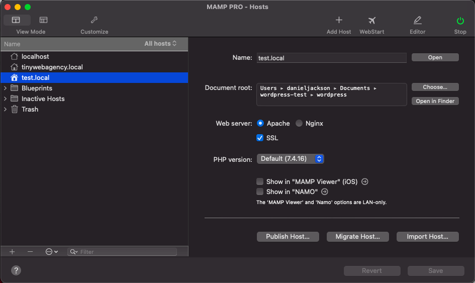
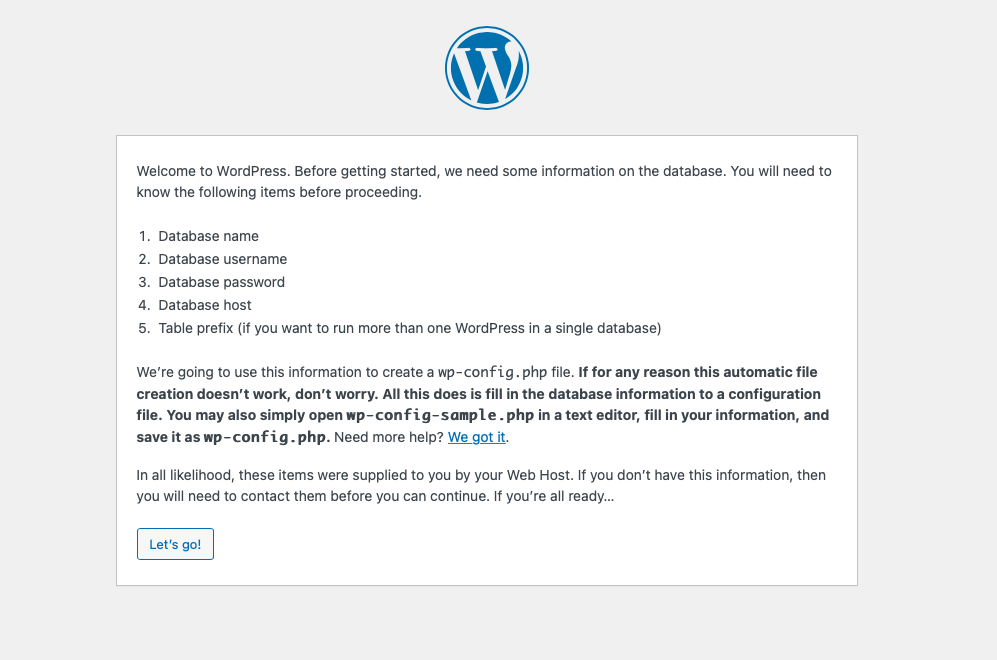
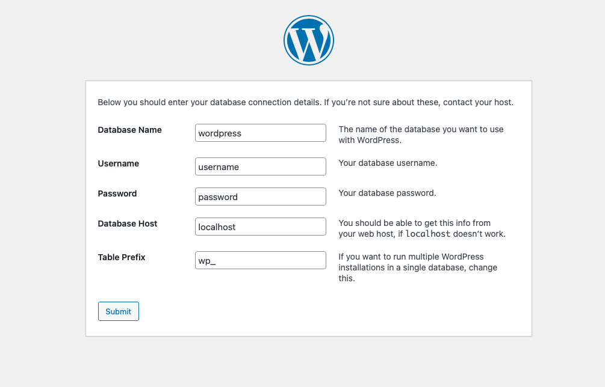
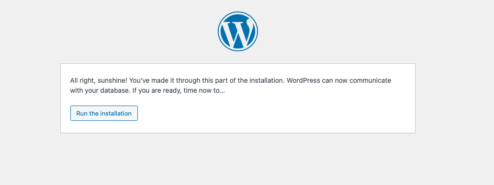
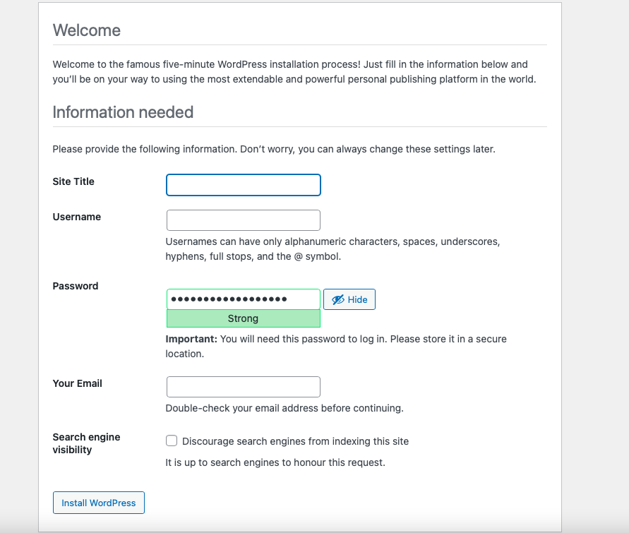
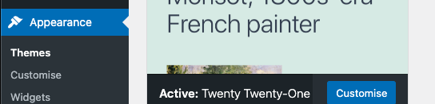
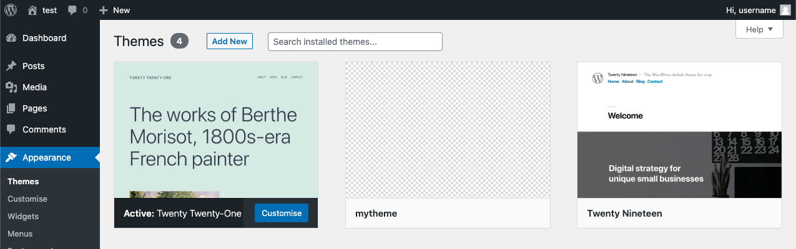

Introduction to WordPress
WordPress (WP) is an open-source Content Management System (CMS) written in PHP and using a MySQL or MariaDB database.
How to setup WordPress
WordPress can be downloaded from the WordPress.org website. The latest version of WordPress is version 5.8.
It is always recommended to never edit the core code of WordPress. Outside of configuring WordPress, almost everything you do in WordPress will be in the wp-content folder.
Recommended requirements:
- Apache or Nginx server
- PHP version 7.4 or greater
- MySQL version 5.6 or MariaDB version 10.1 or greater.
To setup the Apache or Nginx webserver locally, install one of these recommended tools:
Start the webserver and if successful the default page will show. In MAMP this will be: http://localhost:8888/MAMP/.
You may want to setup a host in your webserver for each WordPress project. In our example, we created a host named test.local. This host is connected to the location of the downloaded WordPress files.
The WordPress setup page can be viewed on our localhost using the URL of https://test.local:8890/wp-admin/setup-config.php.
This setup process will generate the wp-config.php file.
Click the Let's go! button to continue the setup process.
Connecting to the Database
The wp-config.php file is used to connect to the MySQL or MariaDB database used by WordPress. The database credentials are stored in this file. If your WordPress instance is hosted, these database credentials are often provided by your web host.
If your web server has phpMyAdmin installed, you can create your local database here. With the web server running, access phpMyAdmin using the URL of http://localhost:8888/phpMyAdmin5/.
You can also setup the Database using tools such Sequel-Ace, if you'd prefer.
You will need to set the language and encoding to be utf8mb4_general_ci.
Follow these instructions on the WordPress support documentation to setup your database.
The Database credentials should be entered into the WordPress setup screen. This will generate the wp-config.php file so WordPress can connect to your database. These credentials should match those in phpMyAdmin.
For simplicity we will keep the default credentials. These will match those credentials in phpMyAdmin. We can look to change these credentials in the wp-config.php file once the database and WordPress installation has been installed.
All tables within the database will have the prefix of wp_ by default, unless something different is specified during the setup process.
Next, we run the installation.
If successful, WordPress should now be connected to your database.
Install WordPress
The final part of the setup is to install WordPress and setup the admin username and password to login to the admin dashboard.
Fill in the form and then click the Install WordPress button to complete the installation process.
WordPress is now installed and setup. To login to the WordPress admin dashboard, use the URL of your WordPress host, such as: https://test.local:8890/wp-admin/, and login with the username and password you provided during the setup process.
Post Types
WordPress houses lots of different types of content that are divided into something called Post Types. By default WordPress stores all post types in the database under the wp_posts table.
Posts and Pages are just two of the default post types that are included within a WordPress installation. The full list includes:
- Posts
- Pages
- Attachments
- Revisions
- Navigation menus
- Custom CSS
- Changesets
We can also create our own Custom Post Types (CPT) if we choose.
Custom Post Types (CPT)
Custom Post Types (CPT) transform a WordPres site into a powerful Content Management System (CMS). They allow you to go beyond posts and pages by creating different content types for your website.
A Custom Post Type can either be created using a plugin, such as CPT UI, or manually by writing PHP code.
To add a Custom Post Type, open the functions.php file in the theme and add the following code.
// Our custom post type function
function create_posttype() {
register_post_type( 'movies',
// Custom post type options
array(
'labels' => array(
'name' => __( 'Movies' ),
'singular_name' => __( 'Movie' )
),
'public' => true,
'has_archive' => true,
'rewrite' => array('slug' => 'movies'),
'show_in_rest' => true,
)
);
}
// Hooking up our function to theme setup
add_action( 'init', 'create_posttype' );
This example will add a Custom Post Type (CPT) named Movies, as an example, to the sidebar in the WordPress admin dashboard.
Pages
A page in WordPress is a default post type that is used to display content such as the Home, About and Contact us pages. You can create as many pages as required. Once a page has been created, it can be added to the site's navigation menu so your users can find it.
When WordPress is installed, two pages will be created by default:
- Privacy Policy
- Sample Page
You can add a new page to your WordPress site by opening the WordPress admin dashboard and selecting Add New from the Pages tab.
Pages can have four states:
- Published - pages that are visible on your site.
- Draft - pages that are still being worked on and haven't yet been published.
- Scheduled - pages that have a set time to be published.
- Trash - pages that have been deleted.
Themes
WordPress sites can be styled using themes. We have the option to install a theme or we can choose to create our own custom theme if we choose. A list of themes available to install can be found on the WordPress.org website at: https://en-gb.wordpress.org/themes/
The appearance of all the pages and posts that are created on a WordPress website is handled by a template file named page.php in your theme.
To view the templates from within the WordPress admin dashboard, open the Appearance/Themes section from the sidebar.
You will find any installed themes inside the wp-content/themes/ directory of your WordPress installtion.
The current version of WordPress, version 5.8 comes installed with the Twenty Twenty-One theme by default. This can be changed. You may also see a number of other themes pre-installed that can be used if you choose.
Templates may contain a functions.php file in their directory. This is known as a theme functions file and it acts like a plugin for your WordPress site that's automatically activated with your current theme.
Creating a custom theme
Within the wp-content/themes directory, create an empty folder. This will contain the code for your custom theme. For this example, the folder will be named mytheme.
A WordPress theme needs two files to exist - style.css and index.php. In your custom theme folder, create style.css and add a code comment that will alert WordPress that a theme exists. Update the comment details for your own theme.
/*
Theme Name: mytheme
Author: Justtoconfirm
Description: A custom theme as a demonstration for WordPress
Version: 0.0.1
Tags: mytheme
*/
Next, create a simple file and save as index.php inside the folder containing your custom theme. Even without any PHP code inside the index.php file, your custom theme should be available from within the WordPress admin dashboard.
The file structure will look something like this (functions.php is optional):
wordpress /
wp-content /
themes /
mytheme /
functions.php
index.php
style.css
Some themes will have a functions.php file. This is not strictly required but it does allow functionality to be added to your code. If you wish to add a functions.php file it should be placed into the root of your theme's folder (as above).
Building the custom theme
Since index.php is going to be rendering all of our pages, it's going to be doing a lot of work. The index.php file will contain code that looks like HTML, but will also include the wp_head() action hook. This is core functionality and allows WordPress and third-party plugins to insert code into the header without modifying the template files.
<!DOCTYPE html>
<html <?php language_attributes(); ?>>
<head>
<meta charset="<?php bloginfo( 'charset' ); ?>">
<meta name="viewport" content="width=device-width, initial-scale=1">
<?php wp_head(); ?>
</head>
WordPress will use the wp_head() hook to dynamically insert the page title. You will need to create a functions.php file and use the WordPress built-in add_theme_support() function to output the page <title>:
<?php
add_theme_support( 'title-tag' );
?>
Next, we have the body of the page. The body_class() helper function is provided by WordPress to output a list of useful CSS classes that describe the page being displayed.
<body <?php body_class(); ?>>
This also accepts parameters so you can add your own classes, for example:
<body <?php body_class('wide-template dark-background'); ?>>
Next, we have the template header. Here we are using the built-in template functions from WordPress to output the site title and description and the home_url() function to link back to the homepage.
<header class="site-header">
<a href="<?php echo esc_url( home_url( '/' ) ); ?>">
<h1><?php bloginfo( 'name' ); ?></h1>
</a>
<p class="site-description"><?php bloginfo( 'description' ); ?></p>
</header>
The header will use the bloginfo() method of WordPress to display the site information. This content displayed (name & description) can be found within the Settings/General Settings tab within the WordPress admin dashboard. WordPress documentation around the bloginfo() method is available.
Finally, we have the footer. This will use the wp_footer() hook used by WordPress and any plugins to include scripts in the footer needed to render the page.
<footer>
<?php wp_footer(); ?>
</footer>
Activate the theme
Click the Activate button on the theme to apply your custom theme to your WordPress site.
Plugins
WordPress plugins are PHP scripts that extend the functionality of WordPress. They enhance the features or add new functionality to the CMS.
All plugins will be installed within the wp-content/plugins/ directory of your WordPress installation. It is possible to install plugins manually by extracting and copying them into this directory. Doing so will make them available for activation within the admin dashboard.
Advanced Custom Fields (ACF)
Advanced Custom Fields (ACF), is a WordPress plugin that allows you to add extra content fields, known as Custom Fields, to the edit screens in the admin dashboard of WordPress.
The documentation for Advanced Custom Fields (ACF) is available.
This plugin does not come pre-installed with WordPress so needs to be installed to be used. Once installed the plugin will be found inside the wp-content/plugins/ directory of your WordPress installation.